관광통역안내사-1교시 (2016-04-09 기출문제)
1과목: 한국사
1. 구석기 문화에 관한 설명으로 옳은 것은?
- 석기인 격지, 팔매돌, 밀개는 조리 도구이다.
- 움집에 거주하였으며 난방을 위한 화덕이 있었다.
- 석기 제작 기법은 간석기에서 뗀석기로 발전하였다.
- 연천 전곡리 유적에서 주먹도끼 등의 유물이 출토되었다.
(정답률: 87%)

2. 다음 유적지와 관련된 시대에 관한 설명으로 옳지 않은 것은?
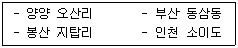
- 가락바퀴를 이용하여 고기잡이를 하였다.
- 종교적인 필요에 의해 조개껍데기 가면이 제작되었다.
- 진흙을 빚어 불에 구워 만든 빗살무늬토기를 사용하였다.
- 탄화된 곡식이 출토되어 식량 생산 단계였음을 알 수 있다.
(정답률: 69%)
3. 고조선 사회에 관한 설명으로 옳지 않은 것은?
- 순장 풍습이 존재하였다.
- 형벌과 노비가 존재하였다.
- 사유재산을 중시하고 보호하였다.
- 소도라는 신성 지역이 존재하였다.
(정답률: 76%)
4. 다음 기록에 해당하는 국가에 관한 설명으로 옳은 것은?
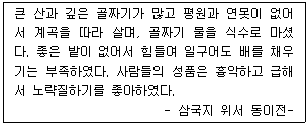
- 책화라는 제도가 존재하였다.
- 서옥제라는 풍습이 존재하였다.
- 행정구획인 사출도가 존재하였다.
- 신지, 읍차 등의 지배자가 존재하였다.
(정답률: 77%)
5. 삼국의 관등제도에 관한 설명으로 옳지 않은 것은?
- 고구려의 관등조직은 '형'계열과 '사자'계열로 분화 편제되었다.
- 백제는 16관품을 세 단계로 구분하고 공복색깔로 구별하였다.
- 신라는 골품에 따른 관등의 제한을 두었는데 이를 득난이라 한다.
- 삼국의 관등 정비는 중앙집권적인 국가를 형성하기 위한 조치였다.
(정답률: 83%)
6. 삼국시대 예술에 관한 설명으로 옳은 것은?
- 천마도는 솔거가 그렸다.
- 12악곡은 왕산악이 지었다.
- 거문고는 우륵이 만들었다.
- 방아타령은 백결선생이 지었다.
(정답률: 70%)
7. 6세기 중엽 관산성 전투에 관한 설명으로 옳은 것을 모두 고른 것은?
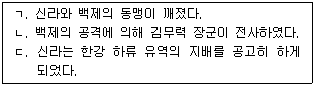
- ㄱ, ㄴ
- ㄱ, ㄷ
- ㄴ, ㄷ
- ㄱ, ㄴ, ㄷ
(정답률: 85%)
8. 고구려와 수ㆍ당 전쟁 과정을 순서대로 바르게 나열한 것은?
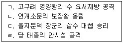
- ㄱ - ㄴ - ㄷ - ㄹ
- ㄱ - ㄷ - ㄴ - ㄹ
- ㄷ - ㄹ - ㄴ - ㄱ
- ㄷ - ㄱ - ㄹ - ㄴ
(정답률: 62%)
9. 통일신라의 지방행정에 관한 설명으로 옳은 것은?
- 정복한 국가의 귀족들을 소경으로 이주시켜 감시하였다.
- 지방관 감찰을 위해 관리를 파견하는 상수리 제도를 실시하였다.
- 행정적 기능보다 군사적 기능을 강화하여 전국을 9주로 나누었다.
- 경주의 지역적 편협성을 보완하기 위해 고구려와 백제 지역에 5소경을 설치하였다.
(정답률: 28%)
10. 통일신라시대 말기에 관한 설명으로 옳지 않은 것을 모두 고른 것은?
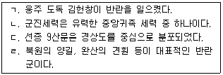
- ㄱ, ㄷ
- ㄱ, ㄹ
- ㄴ, ㄷ
- ㄴ, ㄹ
(정답률: 43%)
11. 고려 태조가 시행한 정책으로 옳은 것을 모두 고른 것은?
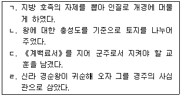
- ㄱ, ㄴ, ㄷ
- ㄱ, ㄴ, ㄹ
- ㄱ, ㄷ, ㄹ
- ㄴ, ㄷ, ㄹ
(정답률: 55%)
12. 고려시대의 대간제도와 관련 있는 기구는?
- 어사대
- 중추원
- 도병마사
- 동녕부
(정답률: 53%)
13. 고려의 경제 제도에 관한 설명으로 옳지 않은 것은?
- 한인전은 6품 이하 관리의 자제에게 지급하였다.
- 국가 재정 확충을 위하여 소금전매제를 시행하였다.
- 민전은 매매, 상속, 기증, 임대 등이 가능한 토지였다.
- 양계의 조세는 13개 조창에 의해 개경으로 운송되었다.
(정답률: 34%)
14. 고려 무인집권기에 설치된 기구에 관한 설명으로 옳지 않은 것은?
- 대장경을 간행하기 위해 교장도감을 설치하였다.
- 사병기관인 도방을 설치하여 신변을 경호하였다.
- 문인들의 전문적인 지식을 활용하기 위해 서방을 설치하였다.
- 반대 세력을 제거하고 비위를 감찰하기 위해 교정도감을 설치하였다.
(정답률: 53%)
15. 조선 전기 통치 체제 정비와 관련된 사실을 순서대로 바르게 나열한 것은?
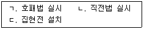
- ㄱ - ㄴ - ㄷ
- ㄱ - ㄷ - ㄴ
- ㄴ - ㄱ - ㄷ
- ㄷ - ㄱ - ㄴ
(정답률: 70%)
16. 조선 전기 천문학의 발달과 관련이 있는 것을 모두 고른 것은?
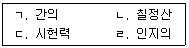
- ㄱ, ㄴ
- ㄱ, ㄹ
- ㄴ, ㄷ
- ㄷ, ㄹ
(정답률: 50%)
17. 조선 시대 공납의 폐단을 해결하기 위해 제시된 방안으로 옳은 것을 모두 고른 것은?
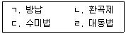
- ㄱ, ㄴ
- ㄱ, ㄹ
- ㄴ, ㄷ
- ㄷ, ㄹ
(정답률: 63%)
18. 조선 시대 중인 신분에 해당하지 않는 것은?
- 향리
- 역관
- 도고
- 서리
(정답률: 58%)
19. 다음에 해당하는 국왕의 업적으로 옳은 것은?
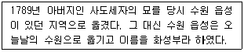
- 장용영 설치
- 별기군 설치
- 금위영 설치
- 훈련도감 설치
(정답률: 73%)
20. 조선 후기 상품 화폐 경제의 발달에 관한 설명으로 옳지 않은 것은?
- 철전인 건원중보를 만들었으며, 삼한통보, 해동통보 등의 동전도 사용하였다.
- 개성의 송상은 전국에 지점을 설치하고 대외 무역에도 깊이 관여하여 부를 축적하였다.
- 동전의 발행량이 늘어났지만 제대로 유통되지 않아 동전 부족 현상이 발생하기도 했다.
- 상품 매매를 중개하고 운송, 보관, 숙박, 금융 등의 영업을 하는 객주와 여각이 존재하였다.
(정답률: 81%)
21. 조선 후기 그림에서 나타난 새로운 경향으로 옳지 않은 것은?
- 우리의 자연을 사실적으로 그리는 화풍이 등장하였다.
- 안견 등 화원 출신 화가들의 작품 활동이 활발하였다.
- 서양화의 기법을 반영하여 사물을 실감나게 표현하였다.
- 서민들의 생활과 감정이 잘 나타나는 민화가 유행하였다.
(정답률: 60%)
22. 다음 농민 봉기에 관한 설명으로 옳은 것은?
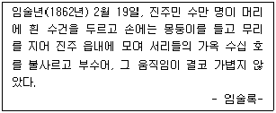
- 농민자치조직인 집강소를 설치하여 개혁을 주장하였다.
- 경상우병사인 백낙신의 수탈에 반발하여 일으킨 것이다.
- 만적 등 천민의 신분 해방 운동을 촉진하는 요인이 되었다.
- 홍경래의 지휘 아래 영세 농민, 중소 상인 등이 합세하였다.
(정답률: 50%)
23. 신민회의 활동으로 옳은 것을 모두 고른 것은?
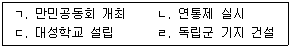
- ㄱ, ㄴ
- ㄱ, ㄷ
- ㄴ, ㄹ
- ㄷ, ㄹ
(정답률: 50%)
24. 민립대학 설립 운동이 시작된 시기에 해당하는 일제 통치 정책으로 옳은 것은?
- 창씨개명을 강요하였다.
- 헌병경찰제를 실시하였다.
- 산미증식계획을 실시하였다.
- 황국신민화 정책을 실시하였다.
(정답률: 69%)
25. 광복 직후 정부 수립을 위한 활동을 순서대로 바르게 나열한 것은?
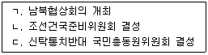
- ㄱ - ㄴ - ㄷ
- ㄱ - ㄷ - ㄴ
- ㄴ - ㄷ - ㄱ
- ㄷ - ㄴ - ㄱ
(정답률: 57%)
2과목: 관광자원해설
26. 천연기념물로 지정된 동굴을 모두 고른 것은?
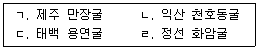
- ㄱ, ㄴ
- ㄱ, ㄹ
- ㄴ, ㄷ
- ㄷ, ㄹ
(정답률: 56%)
27. 자연공원에 관한 설명으로 옳은 것은?
- 금오산은 1967년 지정된 최초의 도립공원이다.
- 천마산은 1983년 지정된 도립공원으로 스키장으로 잘 알려져 있다.
- 소백산은 1980년 지정된 국립공원으로 단양군과 영주시에 걸쳐 있다.
- 남한산성은 1971년 지정된 도립공원이다.
(정답률: 53%)
28. 비인적 해설기법 중 단방향 해설매체(길잡이식 해설)에 관한 설명으로 옳지 않은 것은?
- 안내판, 키오스크, 멀티미디어시스템 등이 포함된다.
- 문자형과 상징형 등으로 나눌 수 있다.
- 이용자의 선호에 따라 취사선택이 가능하다.
- 이용자의 정보해독 능력에 따라 다른 학습효과를 낼 수 있다.
(정답률: 37%)
29. 람사르 습지 목록에 등재된 곳을 모두 고른 것은?
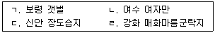
- ㄱ, ㄴ
- ㄱ, ㄹ
- ㄴ, ㄷ
- ㄷ, ㄹ
(정답률: 53%)
30. 지역과 해수욕장의 연결이 옳지 않은 것은?
- 전라북도 - 격포 해수욕장
- 인천광역시 - 하나개 해수욕장
- 경상남도 - 춘장대 해수욕장
- 경상북도 - 구룡포 해수욕장
(정답률: 62%)
31. 관광진흥법에 의해 지정된 관광특구가 아닌 것은?
- 평택시 송탄
- 서울특별시 잠실
- 창녕군 부곡온천
- 공주시 백제문화지구
(정답률: 32%)
32. 국가지질공원으로 지정된 곳이 아닌 것은?
- 부산
- 청송
- 지리산권
- 강원평화지역
(정답률: 45%)
33. 관광농원에 관한 설명으로 옳지 않은 것은?
- 농업인의 소득증대를 도모하는 사업이다.
- 숙박시설은 설치할 수 없다.
- 사업규모는 100,000 m2 미만이어야 한다.
- 농촌의 쾌적한 자연환경과 전통문화 등을 농촌체험ㆍ관광자원으로 개발하는 사업이다.
(정답률: 82%)
34. 유네스코 인류무형유산에 등재된 순서대로 바르게 나열한 것은?
- 강강술래 - 판소리 - 처용무 - 영산재
- 강릉단오제 - 아리랑 - 가곡 - 줄타기
- 남사당놀이 - 대목장 - 한산모시짜기 - 농악
- 제주칠머리당영등굿 - 대목장 - 처용무 - 가곡
(정답률: 50%)
35. 무형문화재와 소재지의 연결이 옳지 않은 것은?
- 줄타기 - 경기
- 강강술래 - 전남
- 봉산탈춤 - 강원
- 은산별신제 - 충남
(정답률: 64%)
36. 택견에 관한 설명으로 옳지 않은 것은?
- 2011년 유네스코 인류무형유산에 등재되었다.
- 1980년 국가무형문화재로 지정되면서 정부가 보호하고 있다.
- 택견의 수련은 혼자익히기, 마주메기기, 견주기로 나눌 수 있다.
- 우리나라 전통무술의 하나로, 고구려 고분인 무용총 벽화에 그려져 있다.
(정답률: 57%)
37. 무형문화재에 관한 설명으로 옳은 것은?
- 무형문화재는 관광진흥법에 의해 지정ㆍ보장되는 제도이다.
- 무형문화재에는 전통지식ㆍ기술ㆍ서적ㆍ의례 등이 포함된다.
- 무형문화재에는 국가무형문화재와 시ㆍ군 지정 무형문화재로 구분된다.
- 국가무형문화재는 문화재청장이 무형문화재 위원회의 심의를 거쳐 지정한다.
(정답률: 43%)
38. 국가무형문화재가 아닌 것은?
- 한산소곡주
- 안동차전놀이
- 북청사자놀음
- 조선왕조궁중음식
(정답률: 40%)
39. 단오의 풍속이 아닌 것은?
- 강강술래
- 그네뛰기와 씨름
- 창포물에 머리감기
- 대추나무 시집보내기
(정답률: 73%)
40. 카지노에 관한 설명으로 옳지 않은 것은?
- 1994년 관광진흥법 개정에 의해 관광사업으로 규정되었다.
- 국내 최초의 카지노는 1967년 개설된 서울파라다이스워커힐카지노이다.
- 강원랜드 카지노는 2000년 10월 개장했다.
- 강원랜드 카지노는 내국인출입이 가능하다.
(정답률: 69%)
41. 유형문화재 중 보물로 지정된 것은?
- 부여 정림사지 오층석탑
- 상원사 동종
- 보은 법주사 사천왕 석등
- 강릉 임영관 삼문
(정답률: 45%)
42. 다음 설명에 해당하는 것은?
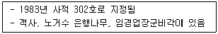
- 아산 외암마을
- 고성 왕곡마을
- 경주 양동마을
- 낙안읍성 민속마을
(정답률: 53%)
43. 국보의 명칭과 지정번호의 연결이 옳지 않은 것은?
- 서울 원각사지 십층석탑 - 국보 제2호
- 경주 불국사 다보탑 - 국보 제21호
- 익산 미륵사지 석탑 - 국보 제11호
- 보은 법주사 쌍사자 석등 - 국보 제5호
(정답률: 48%)
44. 문화재에 관한 설명으로 옳지 않은 것은?
- 부도는 승려의 사리를 안치한 묘탑이다.
- 석조는 주로 사찰에서 돌을 넓게 파서 물을 받아 사용하도록 만든 것이다.
- 석등은 다른 마을과의 경계를 표시하기 위해 설치된 돌로 만든 구조물이다.
- 당간지주는 사찰입구의 당간을 세우는 기둥이다.
(정답률: 69%)
45. 다음 설명에 해당하는 것은?
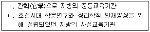
- ㄱ: 향교, ㄴ: 서원
- ㄱ: 서원, ㄴ: 사고
- ㄱ: 향교, ㄴ: 객사
- ㄱ: 서원, ㄴ: 향교
(정답률: 58%)
46. 유형문화재에 관한 설명으로 옳지 않은 것은?
- 유형문화재는 건조물, 전적, 회화, 조각, 공예품 등 유형의 문화적 소산으로 역사적ㆍ예술적 또는 학술적 가치가 큰 것과 이에 준하는 고고자료이다.
- 문화재청장은 문화재위원회의 심의를 거쳐 유형문화재 중 중요한 것을 보물로 지정할 수 있다.
- 국보는 시ㆍ도유형문화재 중 인류문화의 견지에서 가치가 크고 유례가 드문 것을 대상으로 한다.
- 보물 제1호에서 제3호까지는 모두 서울에 소재해 있다.
(정답률: 43%)
47. 다음 설명에 해당하는 것은?
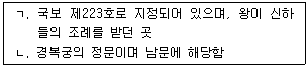
- ㄱ: 근정전, ㄴ: 건춘문
- ㄱ: 사정전, ㄴ: 광화문
- ㄱ: 경회루, ㄴ: 신무문
- ㄱ: 근정전, ㄴ: 광화문
(정답률: 87%)
48. 건축양식과 건축물이 바르게 연결된 것은?
- 주심포양식 - 숭례문
- 주심포양식 - 봉정사 극락전
- 다포양식 - 부석사 무량수전
- 다포양식 - 수덕사 대웅전
(정답률: 69%)
49. 다음 설명에 해당하는 것은?
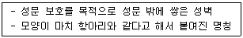
- 옹성
- 해자
- 여장
- 적대
(정답률: 82%)
50. 양양 낙산사에 관한 설명으로 옳은 것은?
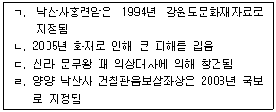
- ㄱ, ㄴ
- ㄱ, ㄹ
- ㄴ, ㄷ
- ㄷ, ㄹ
(정답률: 45%)